QueenAdmin Documentation
Created: Jul 23, 2014
Updated: Jan 5, 2016
By: The Develovers
Email: support@themeineed.com
Thank you for purchasing QueenAdmin Admin Dashboard. By reading this documentation we hope you will get the most of its features. If you have any questions, please feel free to contact us by sending your message to support@themeineed.com.
Overview
QueenAdmin is bootstrap responsive dashboard theme built with Sass and Compass. It has tons of features and ready-to-use ui elements, widgets, charts and pages.
Features
QueenAdmin delivers so much features to enhance and save time on your project development.
- Additional dashboard page
- More pages (Projects, Project Detail, FAQ, Pricing Tables with 3 different styles)
- Additional 10+ widgets
- Menu level
- Wizards (arrow and circle style)
- Stunning, clean and crisp design
- Responsive design
- Fancy form elements and form layout examples
- Form validation
- In-place editing field
- Markdown and WYSIWYG text editor
- Working drag and drop upload
- Widgets, includes ajax-enabled widget
- Minified navigation, fixed left navigation
- Printer-friendly invoice
- Table with pagination, column filter, drag and drop colum reorder, data export and others
- Line Chart, Area Chart, Bar Chart, Donut Chart and mini charts
- Built with Sass and well organized HTML, CSS and Javascript files
- Page templates (profile, search result, inbox, view message, new message, knowledge base, submit ticket, invoice, login, register and error pages)
- Growl-like notifications
- Bootstrap tour
- Vector map and Google map
- and more ...
Important Notes
Icons
The theme uses Ionicons as the main icon set, but Font Awesome is also used in text editor and View Message page as file type icon.
Structure
File and Directory Structure
Below is the structure of the main file after unzipping:
- documentation/
- assets/
- css/
- fonts/
- img/
- js/
- index.html
- assets/
- theme/
- assets/
- css/
- fonts/
- ico/
- img/
- js/
- php/
- uploads/
- dropzone-upload.php
- widget-ajax.php
- sass/
- modules/
- partials/
- pages/
- *.scss
- skins/
- vendors/
- main.scss
- *.html (all html pages)
- assets/
HTML Structure
The theme layout mainly has three areas: top bar, left sidebar and right content. Each page will have the same layout except for index.html, page-search-result.html, page-user-profile.html and page-view-message.html. Those pages don't have page title, breadcrumbs and sticky elements as others.
Common Page
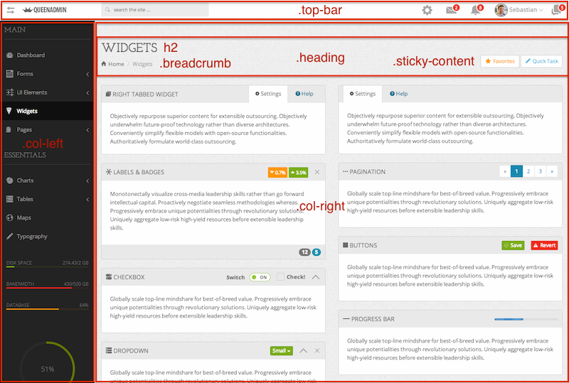Specific Page
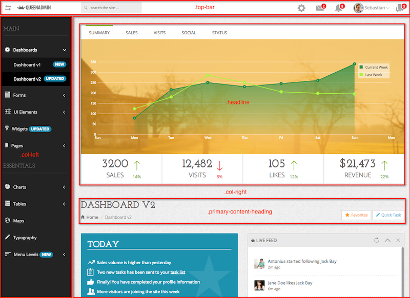This is another version of dashboard page. Use same general layout structure, only it has headline content before primary content heading
Responsive
Responsiveness is main feature of this theme, it will have a nice look on various screen size and devices. To make the theme responsive, breakpoints should be declared to determine which elements must be hidden, shown or reposition. You can find media queries breakpoints declaration at sass/partials/_base.scss file as below
Sass/CSS Structure
Since QueenAdmin is built with Sass which generate CSS for the theme, consequently CSS file (assets/css/main.css) will have the same structure as below (sass/main.scss)
Forms
Fancy Elements
Mostly, the theme uses plugins to provide fancy form elements, but some of them use CSS only. All initialization code for these elements is located at assets/js/queen-elements.js except for Select2 which you can find it at assets/js/queen-common.js.
| Element | Plugin Dir | Plugin Doc |
|---|---|---|
| Masked Input | assets/js/plugins/jquery-maskedinput/ |
http://digitalbush.com/projects/masked-input-plugin/ |
| Checkbox and Radio | - | - |
| Slider Input | assets/js/plugins/bootstrap-slider/ |
http://www.eyecon.ro/bootstrap-slider/ |
| Range Slider Input | assets/js/plugins/jqallrangesliders/ |
http://ghusse.github.io/jQRangeSlider/documentation.html |
| Select2 | assets/js/plugins/select2/ |
http://ivaynberg.github.io/select2/#documentation |
| Tags Input | assets/js/plugins/bootstrap-tagsinput/ |
http://timschlechter.github.io/bootstrap-tagsinput/examples/ |
| Multiselect | assets/js/plugins/bootstrap-multiselect/ |
http://davidstutz.github.com/bootstrap-multiselect/ |
| Date Picker | assets/js/plugins/bootstrap-datepicker/ |
http://www.eyecon.ro/bootstrap-datepicker |
| Date Range Picker | assets/js/plugins/daterangepicker/ |
https://github.com/dangrossman/bootstrap-daterangepicker |
| Dynamic Form Field | - | - |
| Spinner Input | assets/js/plugins/bootstrap-touchspin/ |
http://www.virtuosoft.eu/code/bootstrap-touchspin/ |
| Color Picker | assets/js/plugins/bootstrap-colorpicker/ |
http://www.eyecon.ro/bootstrap-colorpicker/ |
| Textarea | - | - |
In-place Editing
| Element | Plugin Dir | Plugin Doc |
|---|---|---|
| X-editable | assets/js/plugins/bootstrap-editable/ |
http://vitalets.github.io/x-editable |
Validation
You can validate form without javascript using Parsley, however please follow the documentation for further usage.
| Element | Plugin Dir | Plugin Doc |
|---|---|---|
| Parsley | assets/js/plugins/parsley-validation/ |
http://parsleyjs.org/doc/index.html |
File Upload
The form is a working upload form with PHP file php/uploads/dropzone-upload.php. Uploaded file will be saved at php/uploads/ directory.
| Element | Plugin Dir | Plugin Doc |
|---|---|---|
| Dropzone | assets/js/plugins/dropzone/ |
http://www.dropzonejs.com/ |
Dropzone plugin initialization and configurations can be found at assets/js/queen-common.js
Text Editor
Initialization and configurations can be found at assets/js/queen-elements.js
| Element | Plugin Dir | Plugin Doc |
|---|---|---|
| Summernote | assets/js/plugins/summernote/ |
http://hackerwins.github.io/summernote/example.html |
| Bootstrap Markdown | assets/js/plugins/markdown/ |
http://toopay.github.com/bootstrap-markdown/ |
Wizards with Validation
Initialization and configurations can be found at assets/js/queen-elements.js
| Element | Plugin Dir | Plugin Doc |
|---|---|---|
| Wizard by Fuel UX (Arrow Style) | assets/js/plugins/wizard/fuelux/ |
http://exacttarget.github.io/fuelux/javascript.html#wizard |
| Bootstrap Wizard (Circle Style) | assets/js/plugins/wizard/bootstrap-wizard/ |
http://vadimg.com/twitter-bootstrap-wizard-example/#docs |
| Validation by Parsley | assets/js/plugins/parsley-validation/ |
http://parsleyjs.org/doc/index.html |
UI Elements
General
| Element | Plugin Dir | Plugin Doc |
|---|---|---|
| Bootstrap Progressbar | assets/js/plugins/bootstrap-progressbar/ |
http://www.minddust.com/project/bootstrap-progressbar/demo/bootstrap-3-2-0/ |
| Gritter | assets/js/plugins/jquery-gritter/ |
http://boedesign.com/blog/2009/07/11/growl-for-jquery-gritter/ |
jquery.gritter.custom.js) has small modification to enable close button templating by adding new global option. Further notes can be found at the plugin file.
Buttons
Ajax-enabled button needs PHP file at the backend, can be found at php/widget-ajax.php. Also, please open assets/js/queen-elements.js and search for "#loading-example-btn" to see the ajax calling.
Tabs
This theme provides several tabs style from basic, minimal, custom tabs and so on.
Tour
This plugins add tour functionality to tour page, the configurations and the content both can be found at assets/js/queen-elements.js.
| Element | Plugin Dir | Plugin Doc |
|---|---|---|
| Bootstrap Tour | assets/js/plugins/bootstrap-tour/ |
http://bootstraptour.com/api/ |
Icons
Main icon used in this theme is Ionicons. Please follow this link for complete list http://ionicons.com/. Anyway, Font Awesome is also used in text editor and View Message page as file type icon.
Widgets
By default, widget has header and content. It could have footer, but widget without header area is possible. In any way, widget will have a widget title.
Default Widget
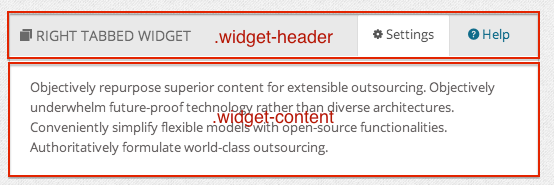Widget With Footer
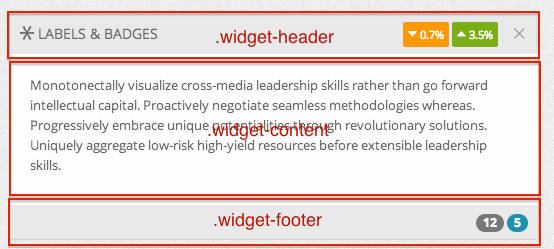Widget With No Header
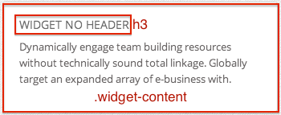Quick Info since v1.1
We provide quick info widgets with several styles i.e. horizontal, vertical, boxed with colored and also clean background
- Horizontal
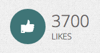 - Vertical
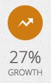 - Boxed
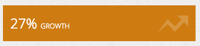 - Boxed, Icon First
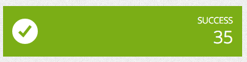 - Boxed, Clean
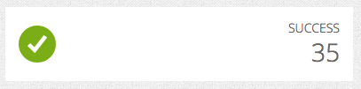
General Portlets
The theme also provides general portlets with various built-in colors such as blue, sea green, green and orange.
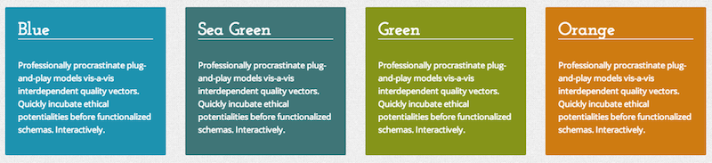Charts
Plugin initializations, configurations includes chart data can be found at assets/js/queen-charts.js except for jQuery easyPieChart used for CPU Usage on the left sidebar, it's initialized at assets/js/queen-common.js
| Element | Plugin Dir | Plugin Doc |
|---|---|---|
| Flot | assets/js/plugins/stat/flot/ |
http://github.com/flot/flot/blob/master/API.md |
| jQuery Sparklines | assets/js/plugins/stat/jquery-sparkline |
http://omnipotent.net/jquery.sparkline/#s-docs |
| jQuery easyPieChart | assets/js/plugins/stat/jquery-easypiechart/ |
http://rendro.github.io/easy-pie-chart/ |
Tables
Initializations and configuratins can be found at assets/js/queen-table.js
| Element | Plugin Dir | Plugin Doc |
|---|---|---|
| Datatable | assets/js/plugins/datatable/ |
http://www.datatables.net/manual/index |
Maps
For Mapael, plugin initializtions, configurations and data can be found at assets/js/queen-maps.js.
| Element | Plugin Dir | Plugin Doc |
|---|---|---|
| Mapael (Vector Map) | assets/js/plugins/mapael/ |
http://www.neveldo.fr/mapael/#api-reference |
| Google Map (as functions) | assets/js/google-map/ |
https://developers.google.com/maps/documentation/javascript/basics |
As you have your own API key, please open assets/js/plugins/google-map/google-map.js
loadScript() then replace "YOUR_API_KEY" with your API key as below
The next thing is provide your address. Still on the same file, please find function codeAddress() as below
Provide your address at variable address, you also found that the marker pin's location is at assets/img/. You can change marker pin by replacing the image file on that directory.
Typography
By default Bootstrap will provides you contextual font color using class .text-muted, .text-primary, .text-danger and so on. Anyway, the theme also provides contextual background color that can be used for element's background.
In the above example, the background is applied to paragraph, so you will get the paragraph of text highlighted by color.
Skins
This theme delivers ready-to-use skins with various colors for your brand identity. Each skin provides top bar and left main navigation combination colors. You can go further by customizing the skin, so it will match best with your branding requirements. All skin files can be found at assets/css/skins/ directory.
Changelog
Version 1.2 Jan 05, 2016
- ADDED fixed left navigation sidebar
- UPDATED Bootstrap to v3.3.6
- UPDATED Font Awesome to v4.5.0
- UPDATED Ionicons to v2.0.1
- UPDATED documentation
- IMPROVED icon visibility on top bar and left navigation
- IMPROVED general UI and miscellaneous
- REMOVED awkward scrolling on left sidebar menu item after expanding
- FIXED all invalid Ionicons class due to recent update
- FIXED date range picker, adjusted last year value in the range
- FIXED input with contextual icon, removed top position
- FIXED invoice print style
Version 1.1 Oct 09, 2014
- ADD new dashboard page
- ADD more pages (Projects, Project Detail, FAQ, Pricing Tables with 3 different styles)
- ADD more widgets and portlets (10+ items)
- ADD menu levels
- ADD wizards (arrow and circle styles)
- ADD fixed top navigation toggle at style switcher
- UPDATED Font Awesome (4.2.0)
- UPDATED skins
- IMPROVE off-canvas navigation, simpler and efficient implementation
- IMPROVE minified navigation, smoother and cleaner transition
- IMPROVE the layout and ui element structure to be more simple and efficient
Version 1.0.1 Aug 08, 2014
- FIXED off-canvas navigation on IE
- FIXED widgets menu always active on every page templates (such as profile, search result etc)
- Other misc updates and improvements
Version 1.0 Aug 10, 2014
- Initial release
Credits
We would like to thank you for jQuery plugins, icons, fonts, images files used in this theme created by the fellow individual developer or team below:
- jQuery - http://jquery.com/
- Bootstrap - http://getbootstrap.com/
- Modernizr - http://modernizr.com/
- jQuery Flot - http://www.flotcharts.org/
- easyPieChart - http://rendro.github.io/easy-pie-chart/
- Sparkline - http://omnipotent.net/jquery.sparkline/
- Mapael - http://www.neveldo.fr/mapael/
- Rapael - http://raphaeljs.com/
- DataTable - http://datatables.net/
- jQueryUI - http://jqueryui.com/
- Masked Input - http://digitalbush.com/projects/masked-input-plugin
- jQRangeSlider - http://ghusse.github.io/jQRangeSlider/documentation.html
- Color Picker - http://www.eyecon.ro/bootstrap-colorpicker/
- Bootstrap TouchSpin - http://www.virtuosoft.eu/code/bootstrap-touchspin/
- Bootstrap Date Picker - http://www.eyecon.ro/bootstrap-datepicker
- Date Range Picker - https://github.com/dangrossman/bootstrap-daterangepicker
- Dropzone - http://www.dropzonejs.com/
- Parsley - http://parsleyjs.org/
- Bootstrap Multiselect - https://github.com/davidstutz/bootstrap-multiselect
- Bootstrap Progress Bar - http://www.minddust.com/bootstrap-progressbar/bootstrap-3.0.0-rc2.html
- Bootstrap Tour - http://bootstraptour.com
- Gritter - http://boedesign.com/blog/2009/07/11/growl-for-jquery-gritter/
- Images - http://unsplash.com/
- UIFaces - http://uifaces.com/
- Patterns - http://subtlepatterns.com/
- Font Awesome Icons - http://fortawesome.github.io/Font-Awesome/
- X-Editable - http://vitalets.github.io/x-editable/
- Summernote - http://hackerwins.github.io/summernote/
- Bootstrap Markdown - http://github.com/toopay/bootstrap-markdown
- Select2 http://ivaynberg.github.io/select2/index.html
- Bootstrap Slider - http://www.eyecon.ro/bootstrap-slider
- Bootstrap Tags Input - http://timschlechter.github.io/bootstrap-tagsinput/examples/bootstrap3/
- Typeaheadjs - https://github.com/twitter/typeahead.js
- Mockjax - https://github.com/appendto/jquery-mockjax
- FuelUX - http://exacttarget.github.io/fuelux/